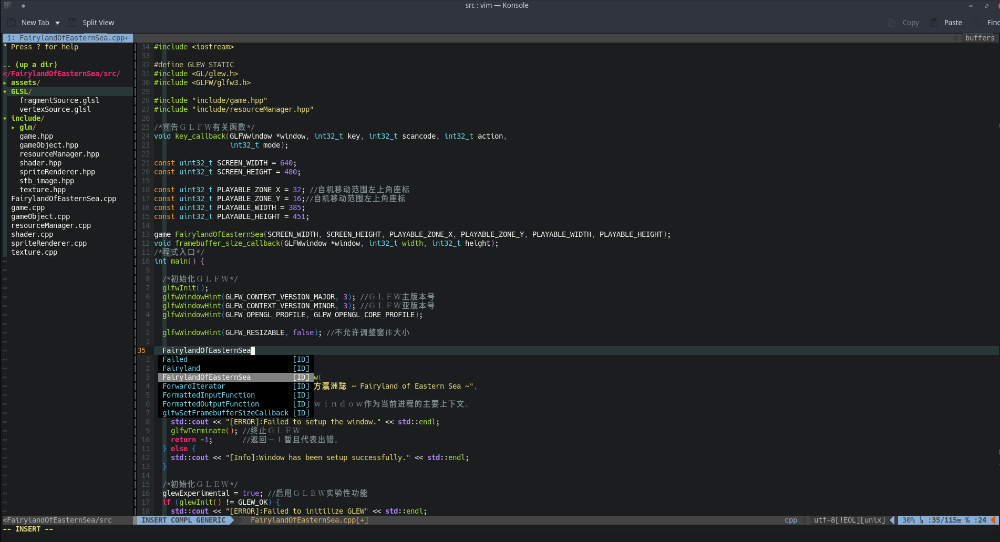

个人用Vim设定

安装Vim-plug
$ curl -fLo ~/.vim/autoload/plug.vim --create-dirs https://raw.githubusercontent.com/junegunn/vim-plug/master/plug.vim
YouCompleteMe之C++相关
./install.py --clang-completer
.vimrc如下
call plug#begin('~/.vim/plugged')
Plug 'tomasr/molokai' "monokai配色方案
Plug 'preservim/nerdtree' "文件树
Plug 'mbbill/undotree' "TO/DO List
Plug 'vim-airline/vim-airline' "Airline
Plug 'vim-airline/vim-airline-themes'
Plug 'luochen1990/rainbow' "彩虹括号
Plug 'Raimondi/delimitMate' "符号配对
Plug 'vim-scripts/taglist.vim'
Plug 'Chiel92/vim-autoformat'
Plug 'octol/vim-cpp-enhanced-highlight' "CPP高亮
Plug 'ycm-core/YouCompleteMe'
call plug#end()
colorscheme molokai
map
map
noremap
map
" For CPP Highlight
let g:cpp_class_scope_highlight = 1
let g:cpp_member_variable_highlight = 1
let g:cpp_class_decl_highlight = 1
let g:cpp_experimental_simple_template_highlight = 1
let g:cpp_experimental_template_highlight = 1
let g:cpp_concepts_highlight = 1
" For Autoformat
let g:autoformat_autoindent = 0
let g:autoformat_retab = 0
let g:autoformat_remove_trailing_spaces = 0
let g:autoformat_verbosemode=1
" For Taglist
let Tlist_Use_Right_Window=1
let Tlist_Inc_Winwidth=0
let Tlist_File_Fold_Auto_Close=1
let Tlist_Exit_Onluwindow=1
" For Airlan
set ambiwidth=double " 设置为双字宽显示，否则无法完整显示如:☆
let g:airline_theme='bubblegum' "Airline主题
let g:airline_powerline_fonts = 1
" 开启tabline
let g:airline#extensions#tabline#enabled = 1 "tabline中当前buffer两端的分隔字符
let g:airline#extensions#tabline#left_sep = ' ' "tabline中未激活buffer两端的分隔字符
let g:airline#extensions#tabline#left_alt_sep = '|' "tabline中buffer显示编号
let g:airline#extensions#tabline#buffer_nr_show = 1
" 映射切换buffer的键位
nnoremap [b :bp
nnoremap ]b :bn
" For Ranbow
let g:rainbow_conf = {
\ 'guifgs': ['#C186BF', '#268EDB','#F79318'],
\ 'ctermfgs': ['lightblue', 'lightyellow', 'lightcyan', 'lightmagenta'],
\ 'operators': '_,_',
\ 'parentheses': ['start=/(/ end=/)/ fold', 'start=/\[/ end=/\]/ fold', 'start=/{/ end=/}/ fold'],
\ 'separately': {
\ '*': {},
\ 'tex': {
\ 'parentheses': ['start=/(/ end=/)/', 'start=/\[/ end=/\]/'],
\ },
\ 'lisp': {
\ 'guifgs': ['royalblue3', 'darkorange3', 'seagreen3', 'firebrick', 'darkorchid3'],
\ },
\ 'vim': {
\ 'parentheses': ['start=/(/ end=/)/', 'start=/\[/ end=/\]/', 'start=/{/ end=/}/ fold', 'start=/(/ end=/)/ containedin=vimFuncBody', 'start=/\[/ end=/\]/
containedin=vimFuncBody', 'start=/{/ end=/}/ fold containedin=vimFuncBody'],
\ },
\ 'html': {
\ 'parentheses': ['start=/\v\<((area|base|br|col|embed|hr|img|input|keygen|link|menuitem|meta|param|source|track|wbr)[ >])@!\z([-_:a-zA-Z0-9]+)(\s
+[-_:a-zA-Z0-9]+(\=("[^"]*"|'."'".'[^'."'".']*'."'".'|[^ '."'".'"><=`]*))?)*\>/ end=## fold'],
\ },
\ 'css': 0,
\ }
\}
let g:rainbow_active = 1
"YouCompleteMe相关
set runtimepath+=~/.vim/bundle/YouCompleteMe
let g:ycm_collect_identifiers_from_tags_files = 1 " 开启 YCM 基于标签引擎
let g:ycm_collect_identifiers_from_comments_and_strings = 1 " 注释与字符串中的内容也用于补全
let g:syntastic_ignore_files=[".*\.py$"]
let g:ycm_seed_identifiers_with_syntax = 1 " 语法关键字补全
let g:ycm_complete_in_comments = 1
let g:ycm_confirm_extra_conf = 0
let g:ycm_key_list_previous_completion = ['
let g:ycm_complete_in_comments = 1 " 在注释输入中也能补全
let g:ycm_complete_in_strings = 1 " 在字符串输入中也能补全
let g:ycm_collect_identifiers_from_comments_and_strings = 1 " 注释和字符串中的文字也会被收入补全
let g:ycm_global_ycm_extra_conf='~/.vim/bundle/YouCompleteMe/third_party/ycmd/cpp/ycm/.ycm_extra_conf.py'
let g:ycm_show_diagnostics_ui = 0 " 禁用语法检查
inoremap
nnoremap
"let g:ycm_min_num_of_chars_for_completion=2 " 从第2个键入字符就开始罗列匹配项
"基本配置
"
set termguicolors
set encoding=utf-8
syntax on
language en_GB.UTF-8
set nocompatible "关闭vi兼容模式
filetype on
filetype indent on
filetype plugin on
set mouse=a "v模式下鼠标
set listchars=tab:▸\ ,trail:▫ "标记Tab与空格
set scrolloff=5 "留五行
set backspace=indent,eol,start
set foldmethod=indent "代码折叠
set foldlevel=99
set laststatus=2 "留命令行
set autoindent "自动缩进
set number "行号
set relativenumber "相对行号
set cursorline "光标线
set cursorcolumn
set wrap "自动换行
set showcmd "显示命令
set wildmenu "Tab补全命
set hlsearch "搜索相关
exec "nohlsearch"
set incsearch
set ignorecase
set smartcase
autocmd BufNewFile *.cpp,*.c,*.h,*.hpp,*.sh,*.bash,*.zsh,*.md,*.tex,*.m exec ":call Setfilehead()"
func Setfilehead()
call append(0,'/***************************************')
call append(1,'#')
call append(2,'# Filename: '.expand("%"))
call append(3,'#')
call append(4,'# Developer: _Herrscher_of_the_Muaku')
call append(5,'# Description: ---')
call append(6,'# CreatTime: '.strftime("%Y-%m-%d %H:%M:%S"))
call append(7,'#')
call append(8,'***************************************/')
endfunc
map
autocmd BufNewFile *.v,*.vh exec ":call SetfileheadHDL()"
func SetfileheadHDL()
call append(0,'/***************************************')
call append(1,'#')
call append(2,'# Filename: '.expand("%"))
call append(3,'#')
call append(4,'# Developer: _Herrscher_of_the_Mukau_')
call append(5,'# Description: ---')
call append(6,'# CreatTime: '.strftime("%Y-%m-%d %H:%M:%S"))
call append(7,'#')
call append(8,'***************************************/')
call append(9,'module '.expand("%:r")."(")
call append(10,'')
call append(11,');')
call append(12,'')
call append(13,'')
call append(14,'endmodule')
endfunc